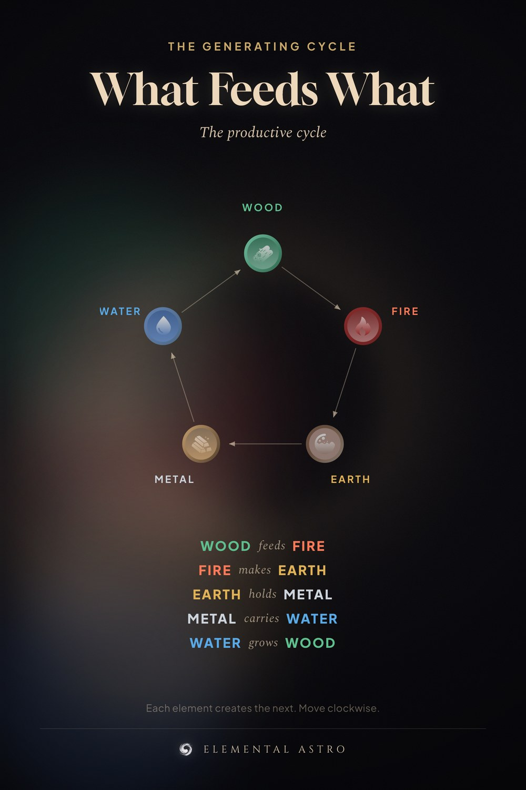

Wood feeds Fire. Fire makes Earth. Earth holds Metal. Metal carries Water. Water grows Wood. This is the generating cycle — the productive cycle of the five elements in Chinese astrology and feng shui. Save it: once you can see the loop, element compatibility stops being memorisation. Five elements chart, Chinese astrology basics.
https://www.elementalastro.io/learn/five-elements